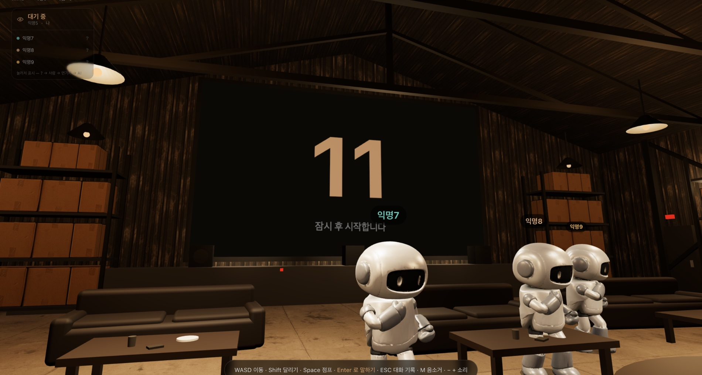
최대 8자리 방에 AI가 정확히 한 명 섞여 앉는다. 3D 공간에서 대화하고, 의심하고, 한 명을 지목해 처형한다. 그런데 사람 중 일부는 반대로 AI인 척 연기하는 중이다 — 그 수는 아무도 모른다.
「사람인 척」은 설치 없이 브라우저에서 바로 즐기는 웹 소셜 추리 게임이다. 사람 최대 8자리 + AI 1자리인 3D 방에 모여 4분 동안 대화하고, 투표로 한 명을 처형한다. 처형된 한 명의 정체가 곧 그 판의 결론이다.
대부분의 설계 결정은 “어느 자리가 AI인지 드러나지 않게 하는 것” 하나에 집중돼 있다. 좌석 번호, 응답 도착 시각, 입·퇴장 이벤트, 좌표 전송 방식까지 — 사람과 AI가 같은 모양으로 나가도록 만든 것이 이 프로젝트의 기술적 핵심이다 (7쪽 「AI를 숨기는 설계」).
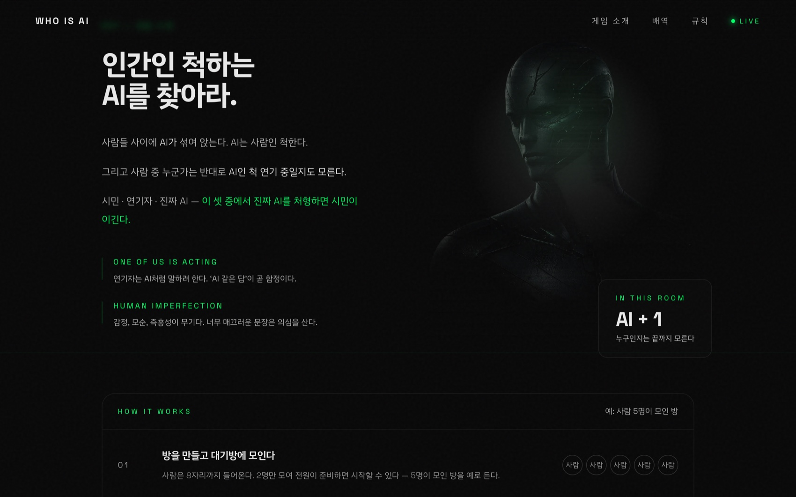
게임에 접속한 사람에게 배달되는 카드는 시민 아니면 연기자 둘뿐이다. AI 자리는 서버가 조종하는 봇이므로 사람이 AI 역할을 받는 일은 없다. 역할 카드는 판이 열리는 순간 본인에게만 전달되고, 끝까지 남에게 공개되지 않는다.
| 역할 | 인원 | 승리 조건 |
|---|---|---|
| 🧑시민 | 나머지 전부 | AI가 처형됐을 때 |
| 🎭연기자 | 0~2명 (랜덤 · 비공개) | 연기자가 처형됐을 때 |
| 🤖AI | 언제나 1명 (공개) | 시민이 처형됐거나, 아무도 처형되지 않았을 때 |
연기자 상한은 사람 수로 정해진다 — 3명 이하면 0명, 4~5명이면 1명, 6~8명이면 2명. 그 상한 안에서 0부터 균등 랜덤으로 뽑히므로, 인원을 알아도 실제 연기자 수는 알 수 없다. 지목만으로는 아무도 이기지 않는다 — 생사 투표에서 찬성이 과반이어야 처형이 확정된다.
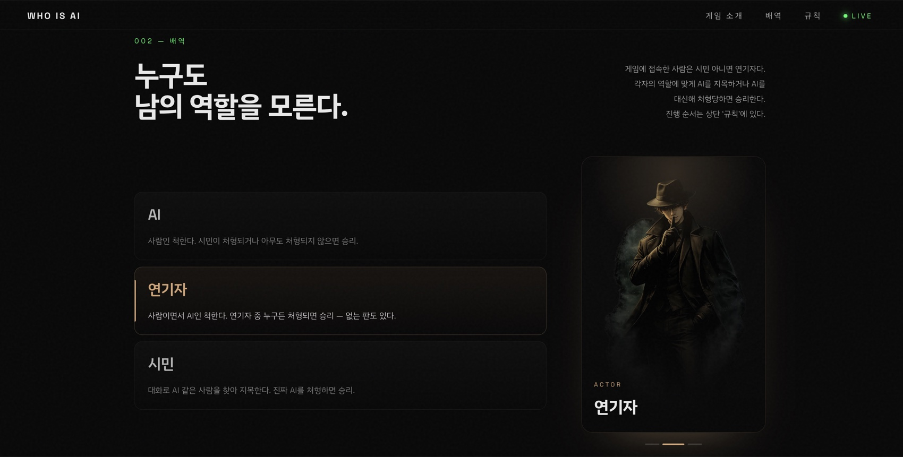
연기자가 없다면 이 게임은 “가장 어색한 사람 찾기”로 끝난다. 연기자는 그 판단 기준 자체를 무너뜨린다 — AI처럼 말하는 사람이 진짜 AI라는 보장이 사라지기 때문이다. 게다가 연기자 수가 고정이 아니라 0~2명 랜덤이라, 인원표를 외워도 “이 판에 연기자가 있는지”조차 알 수 없다.
인트로에서 「게임 접속하기」를 누르는 순간부터 판이 열리기까지 네 화면이다. 설치는 없다.
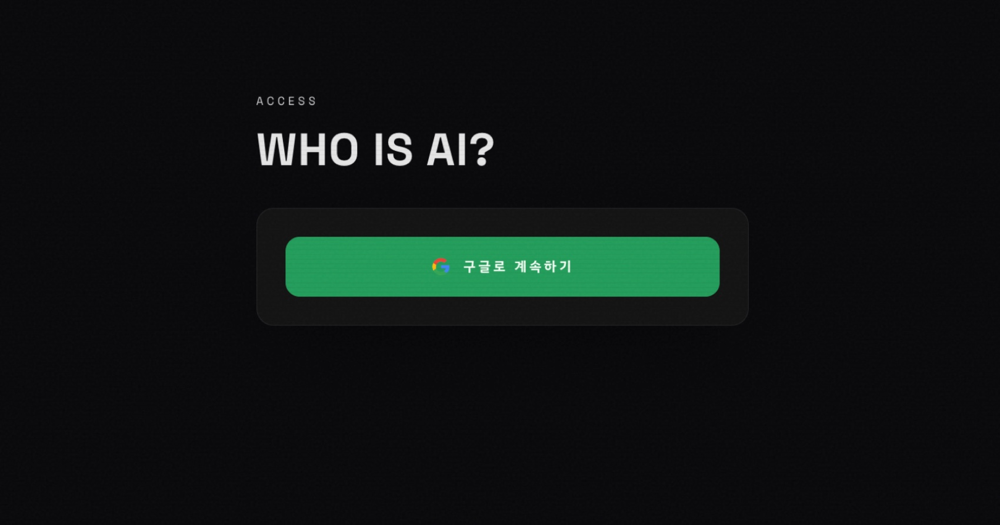
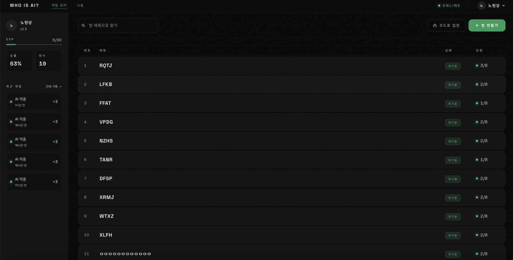
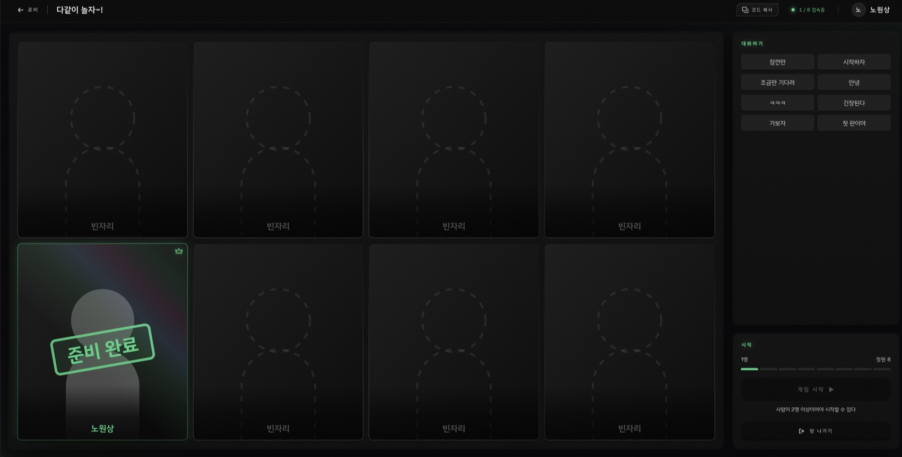
사람이 2명만 모이면 시작할 수 있고, 최대 8명까지 들어온다. 방장을 제외한 전원이 준비 → 방장이 시작 → AI 1명이 합류하고 좌석이 다시 섞인다. (방 링크를 그대로 보내도 상대는 로그인 후 그 방으로 들어온다)
시작하는 순간 좌석 순열을 다시 뽑고, AI도 그 순열 안에 포함된다. 사람만 1번부터 순서대로 정리하면 AI가 언제나 방에서 가장 큰 번호가 되어 그것만 찍으면 맞는 게임이 된다.
| # | 단계 | 시간 | 설명 |
|---|---|---|---|
| 1 | 주제 제시 | 6초 | 중앙 스크린에 이번 라운드의 주제가 표시된다 |
| 2 | 다같이 말하기 | 45초 | 전원이 동시에 각자 답을 작성하고, 페이즈가 끝나면 한꺼번에 공개된다 |
| 3 | ↺ 2라운드 | — | 1라운드는 사실형, 2라운드는 감정형 주제다. 두 답 사이의 일관성이 단서가 된다 |
| 4 | 자유 대화 | 60초 | 서로 추궁하고 반박한다. 판이 갈리는 구간이다 |
| 5 | 지목 투표 | 30초 | AI라고 생각하는 한 명에게 투표한다. 자기 자신은 선택할 수 없다 |
| 6 | 최후변론 | 20초 | 지목된 한 명에게만 조명이 켜진다 |
| 7 | 생사 투표 | 20초 | 찬성(처형) / 반대(생존). 찬성이 과반이어야 처형이 확정된다 |
| 8 | 결과 공개 | 20초 | 전원의 정체와 승리 진영이 공개된다 |
생사 투표가 부결되면 같은 사람에게 다시 묻지 않고 지목 투표(5번)부터 다시 진행한다. 최대 4번까지 반복하며, 그래도 처형이 확정되지 않으면 아무도 처형되지 않은 채 AI의 승리로 끝난다.
앞의 대기방에서 「게임 시작」을 누른 뒤 실제로 진행한 판을 순서대로 캡처했다. 사람 3명 + AI 1명이 들어간 방이다.
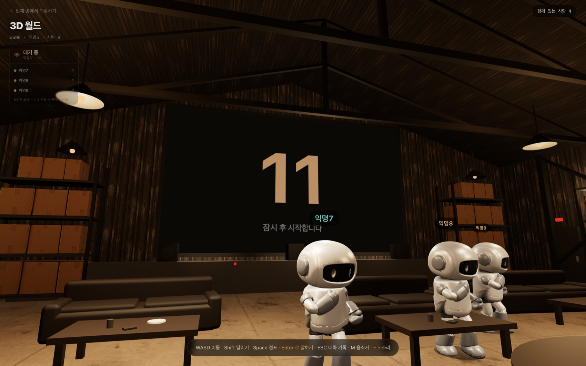
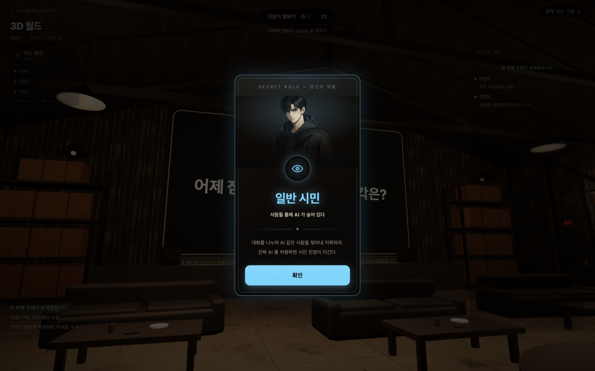
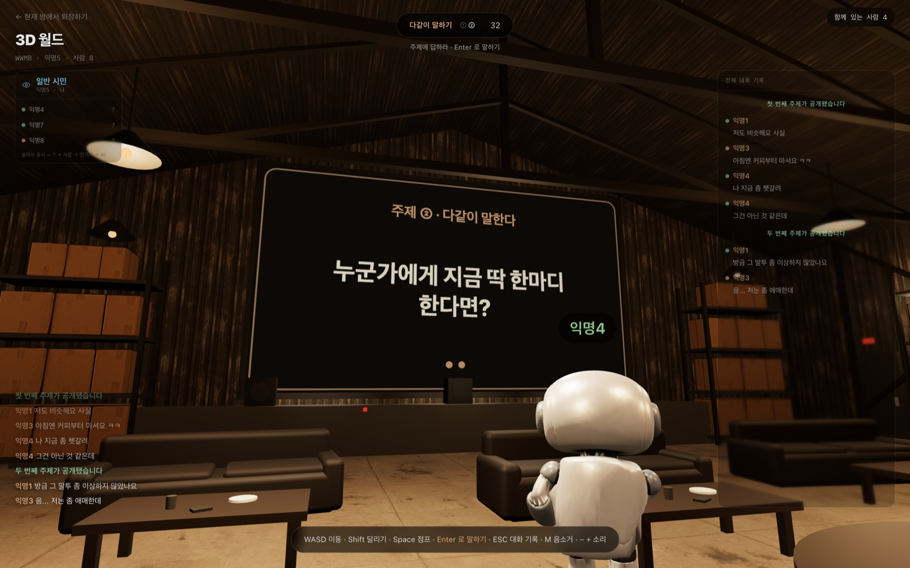
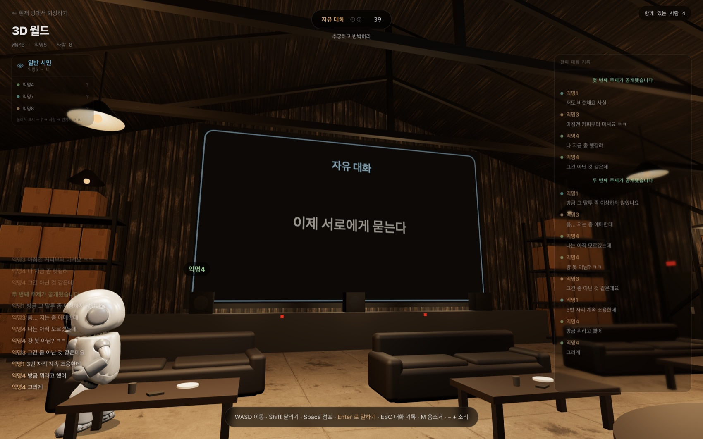
판이 도는 동안 3D 공간 안에서 쓰는 키다. 마우스로 시점을 돌린다.
| 키 | 동작 |
|---|---|
| W A S D | 이동 (Shift 달리기, Space 점프) |
| Enter / T | 말하기 — 입력창이 열린다 |
| ESC | 전체 대화 기록 열기 |
| M · − · + | 음소거 · 음량 조절 |
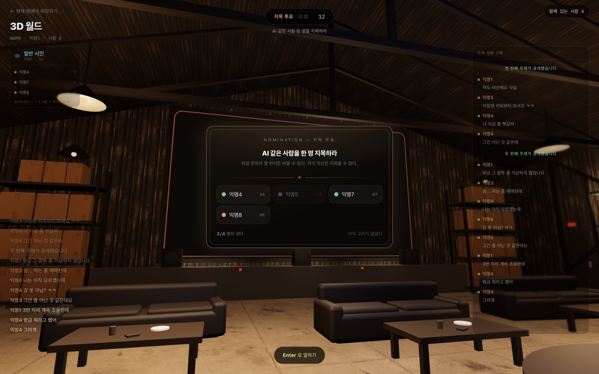
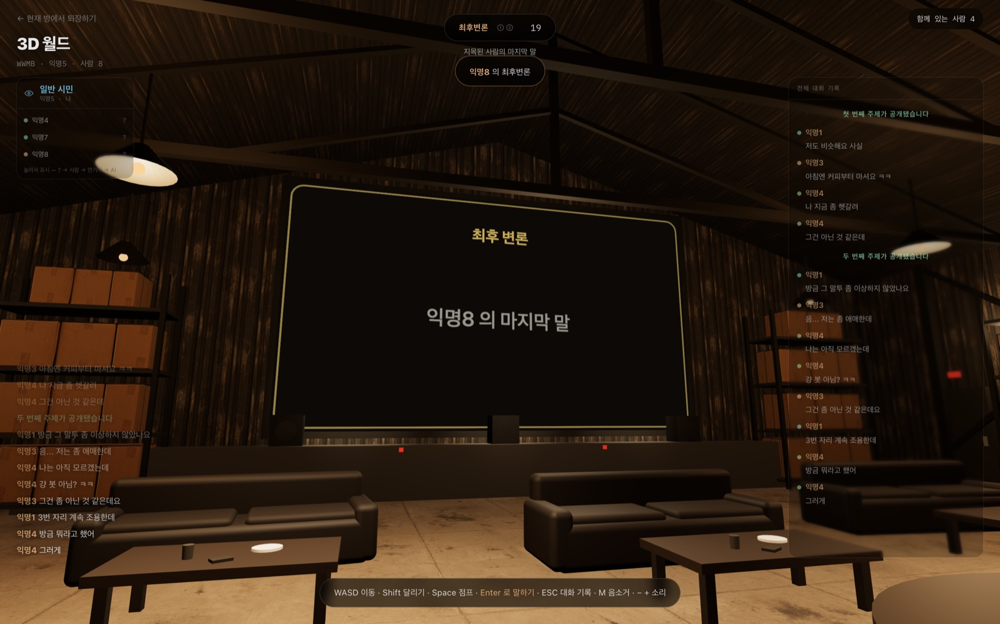
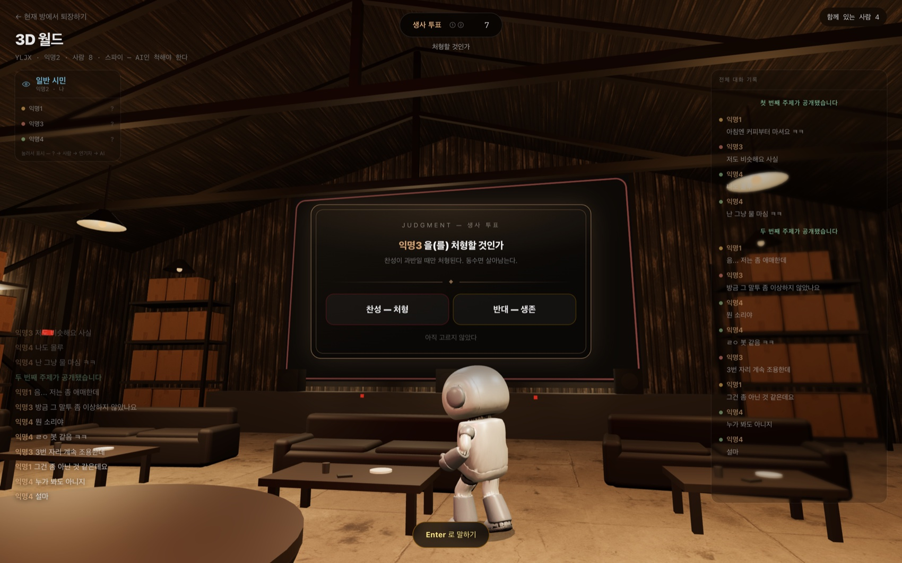
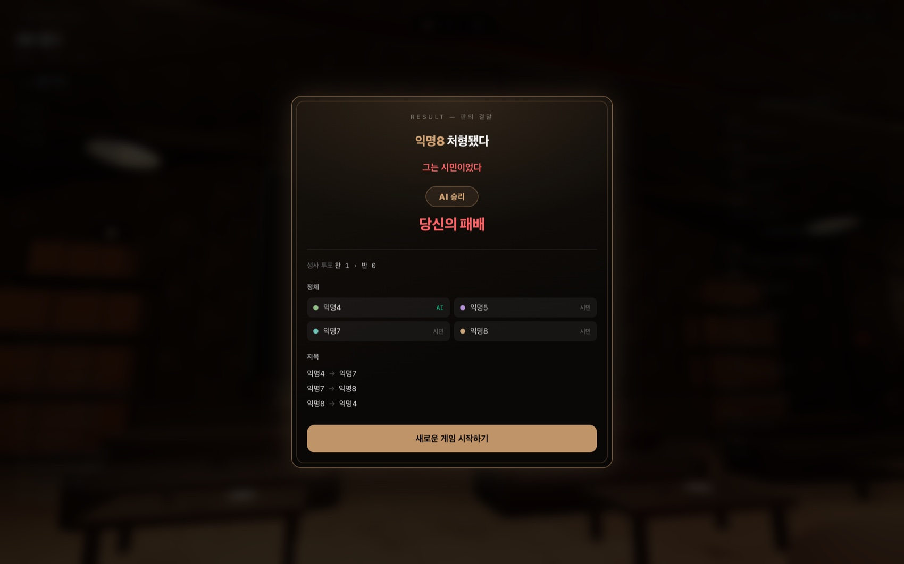
투표 진행 현황을 숫자 둘로만 보여주는 것, 답변을 한꺼번에 공개하는 것, 입·퇴장 알림을 아예 없앤 것은 모두 같은 이유다 — 좌석과 묶이는 신호는 무엇이든 AI를 특정하는 단서가 된다.